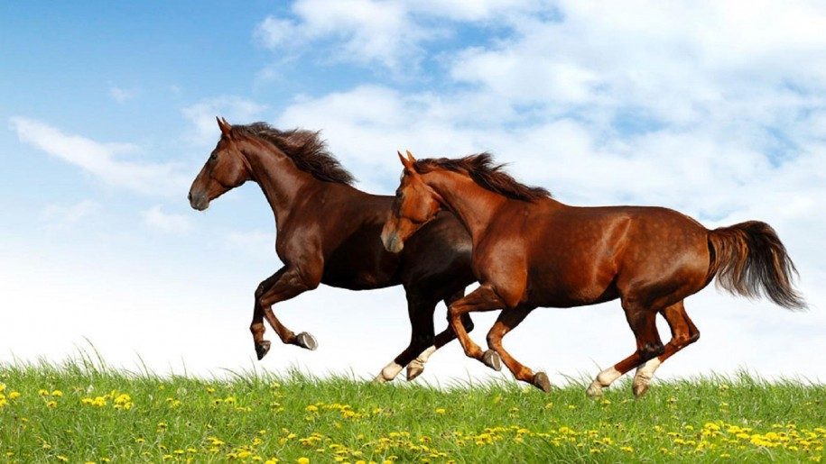

"Tigress" redirects here. For other uses, see Tiger (disambiguation) and Tigress (disambiguation). Endangered (IUCN 3.1)[1] Scientific classification edit Kingdom: Animalia Phylum: Chordata Class: Mammalia Order: Carnivora Suborder: Feliformia Family: Felidae Subfamily: Pantherinae Genus: Panthera Species: P. tigris Binomial name Panthera tigris (Linnaeus, 1758)[2] Subspecies nthera tigris) is the largest species among the Felidae and classified in the genus Panthera. It is most recognizable for its dark vertical stripes on o
Elephants are large mammals of the family Elephantidae in the order Proboscidea. Three species are currently recognised: the African bush elephant (Loxodonta africana), the African forest elephant (L. cyclotis), and the Asian elephant (Elephas maximus). Elephants are scattered throughout sub-Saharan Africa, South Asia, and Southeast Asia. Elephantidae is the only surviving family of the order Proboscidea; other, now extinct, members of the order include deinotheres, gomphotheres, mastodons, anancids and stegodontids; Elephantidae itself also contains several now extinct groups, such as the mammoths and straight-tusked elephants.
The giant panda (Ailuropoda melanoleuca, literally "black and white cat-foot"; Chinese: 大熊猫; pinyin: dà xióng māo, literally "big bear cat"),[4] also known as panda bear or simply panda, is a bear[5] native to south central China.[1] It is easily recognized by the large, distinctive black patches around its eyes, over the ears, and across its round body. The name "giant panda" is sometimes used to distinguish it from the unrelated red panda. Though it belongs to the order Carnivora, the giant panda's diet is over 99% bamboo.[6] Giant pandas in the wild will occasionally eat other grasses, wild tubers, or even meat in the form of birds, rodents, or carrion. In captivity, they may receive honey, eggs, fish, yams, shrub leaves, oranges, or bananas along with specially prepared food.[7][8]
A rhinoceros (/raɪˈnɒsərəs/, from Greek rhinokerōs, meaning 'nose-horned', from rhis, meaning 'nose', and keras, meaning 'horn'), commonly abbreviated to rhino, is one of any five extant species of odd-toed ungulates in the family Rhinocerotidae, as well as any of the numerous extinct species. Two of the extant species are native to Africa and three to Southern Asia. The term "rhinoceros" is often more broadly applied to now extinct relatives of the superfamily Rhinocerotoidea. Members of the rhinoceros family are some of the largest remaining megafauna, with all species able to reach or exceed one tonne in weight. They have a herbivorous diet, small brains (400–600 g) for mammals of their size.
The lion (Panthera leo) is a species in the family Felidae; it is a muscular, deep-chested cat with a short, rounded head, a reduced neck and round ears, and a hairy tuft at the end of its tail. The lion is sexually dimorphic; males are larger than females with a typical weight range of 150 to 250 kg (330 to 550 lb) for males and 120 to 182 kg (265 to 400 lb) for females. Male lions have a prominent mane, which is the most recognisable feature of the species. A lion pride consists of a few adult males, related females and cubs. Groups of female lions typically hunt together, preying mostly on large ungulates. The species is an apex
Zebras (/ˈziːbrə/ ZEE-brə, UK also /ˈzɛbrə/ ZEB-rə)[1] are several species of African equids (horse family) united by their distinctive black-and-white striped coats. Their stripes come in different patterns, unique to each individual. They are generally social animals that live in small harems to large herds. Unlike their closest relatives, horses and donkeys, zebras have never been truly domesticated. There are three species of zebras: the plains zebra, the mountain zebra and the Grévy's zebra. The plains zebra and the mountain zebra belong to the subgenus Hippotigris, while Grévy's zebra is the sole species of subgenus Dolichohippus.
The horse (Equus ferus caballus)[2][3] is one of two extant subspecies of Equus ferus. It is an odd-toed ungulate mammal belonging to the taxonomic family Equidae. The horse has evolved over the past 45 to 55 million years from a small multi-toed creature, Eohippus, into the large, single-toed animal of today. Humans began domesticating horses around 4000 BC, and their domestication is believed to have been widespread by 3000 BC. Horses in the subspecies caballus are domesticated.
©2019 oaes kuruni